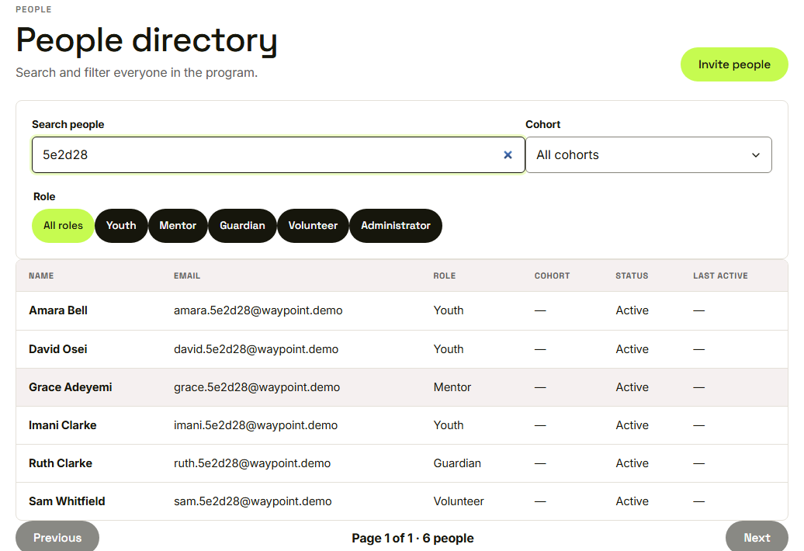
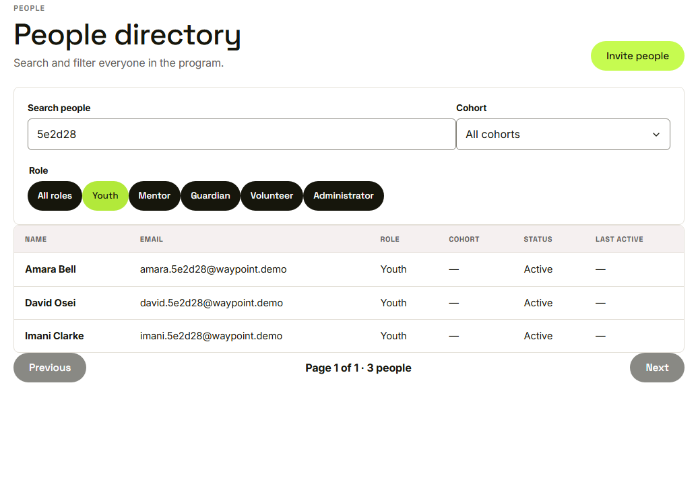
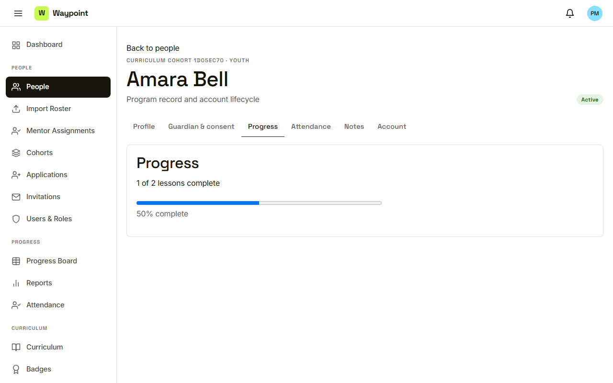
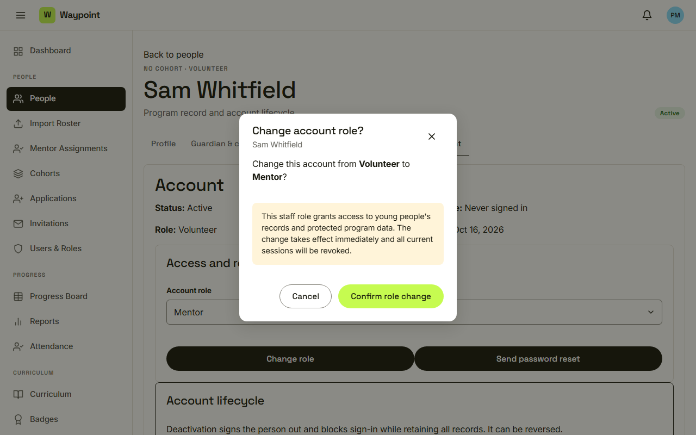
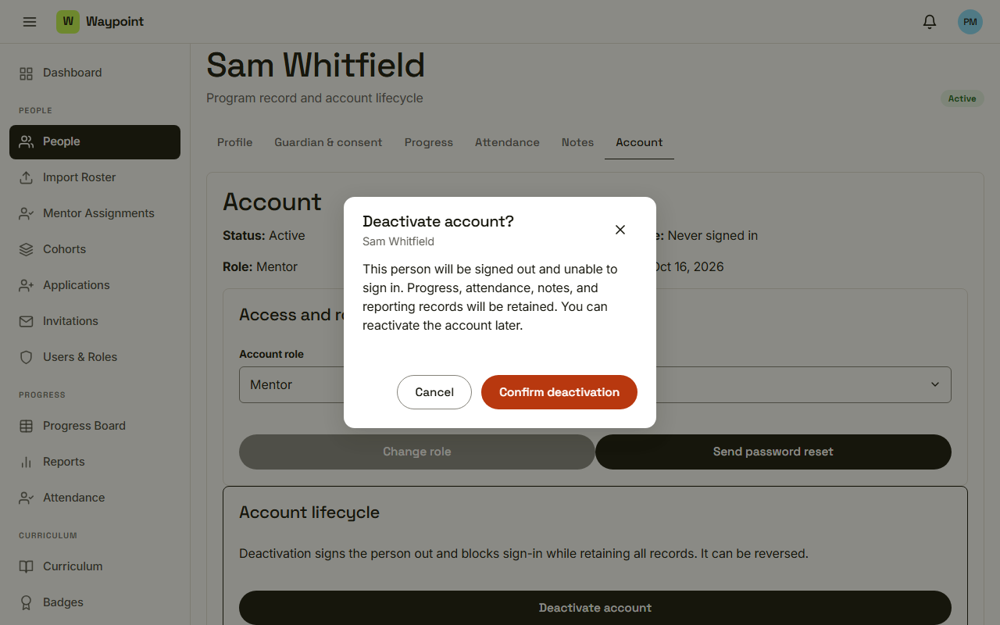
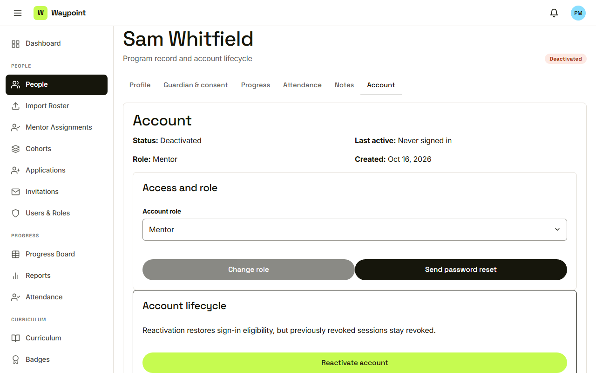

Waypoint · Journey 19
Manage people
Find people, read their records, manage their accounts
The people directory

Search by name or email
Filter by role

Role, cohort and search work together
One record, six tabs

Profile, guardian and consent, progress, attendance, notes, account
A role change warns first

Takes effect immediately, sessions revoked
Deactivate keeps every record

Reversible, and records are retained
Deactivated, with a way back

Reactivate account
Things to remember
- One record has six tabs
- A role change warns first and is immediate
- Deactivation is reversible
- Removal cannot be undone, and asks for a name